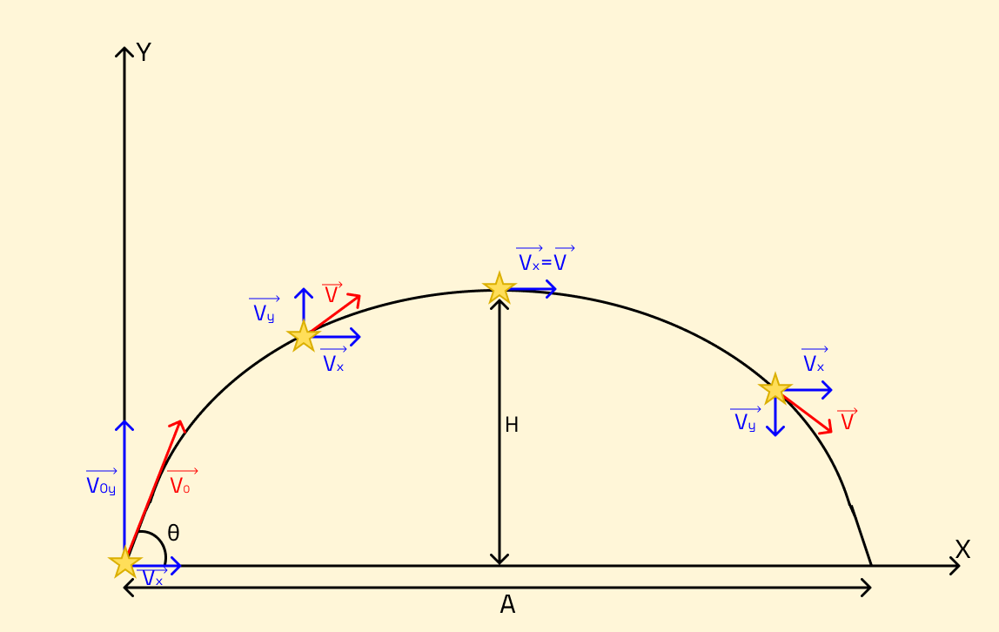

Lançamento Oblíquo
Como vimos na introdução, o Lançamento Oblíquo é um arremesso em que existe determinado ângulo(θ) com a horizontal no início do lançamento, percorrendo um trajeto com formato de uma parábola. Assim como no Lançamento Horizontal, visto anteriormente, esse descreve um MRU horizontalmente e MRUV verticalmente.
Eu gosto de pensar, mesmo nunca tendo visto em lugar algum, que o Lançamento Oblíquo é como um Lançamento Horizontal espelhado, logo os cálculos que realizamos nos dois são semelhantes e com a mesma linha de raciocínio.

Observemos a imagem abaixo:
Conclusões a que podemos chegar:
- Vx é constante em todo o trajeto;
- no ponto de altura máxima(H) Vy é nula, logo V=Vx neste instante;
- Vx=V₀cosΘ e Vy=VsenΘ;
- V²=Vx²+Vy²;
- o tempo(T) no alcance máximo(A) é o dobro de T em H;
- a aceleração do corpo é a gravidade(G), logo se considerarmos o eixo Y crescendo para cima a=-G,
- o módulo de Vy diminui à medida que o corpo sobe e aumenta à medida que ele cai.

Agora vamos para as fórmulas:
- Movimento horizontal
- A=VxT
- Movimento vertical
- H=V₀yT-(GT²)/2
- Vy=V₀y-GT
- Vy²=V₀y²-2GH
Se você pesquisar, encontrará em outros sites fórmulas diferentes e mais específicas, é agora que você se pergunta o porquê de eu deixar somente as mais básicas aqui. Eu, particularmente, não gosto de decorar fórmulas e essas mais sofisticadas são apenas manipulações das que estão neste site, portanto, ao resolver exercícios você pode simplesmente manipulá-las e chegar ao mesmo resultado.
Essa manipulação fará você compreender melhor a matéria, além de ocupar menos espaço na memória. Mas se você insiste, deixo aqui um link para um site com as tais fórmulas.
| Lançamento Horizontal | Lançamento Oblíquo | Vetores | |
|---|---|---|---|
| MRU | A=VxT | A=VxT | - |
| MRUV | Vy²=-2GH | Vy²=V₀y²-2GH | - |
| Vy=-GT | Vy=V₀y-GT | - | |
| H=H₀-(GT²)/2 | H=V₀yT-(GT²)/2 | - | |
| Soma | - | - | Vs²=A²+B²+2ABcosΘ |
| Decomposição | - | - | Vy=VsenΘ |
| - | - | Vx=V₀cosΘ |